Compact motifs with clear silhouettes for checkout displays, travel gifts and collectible color drops.
Year-round social-commerce collection · OEM / ODM
PEIMI develops wholesale crochet keychains and bag charms for boutiques, gift shops and social-commerce sellers. Buyers can customize fruit, animal, floral, food and mini-pouch designs, plus hardware, colors, branded cards and retail packaging. The standard MOQ is 200 pieces per style, with final details confirmed during sampling.
Built for visual discovery
Current wholesale signals favor tactile miniatures, recognizable food and fruit motifs, friendly animals, flowers and useful micro accessories. These directions are designed to photograph clearly for social content while remaining practical for counter displays and gifting.
Compact motifs with clear silhouettes for checkout displays, travel gifts and collectible color drops.
Single statement charms that add texture and personality without overloading the handbag.
Small-scale products with strong close-up detail for short-form video, unboxing and creator content.
Custom colors, hardware, cards and packaging coordinated around a retailer's audience and price band.
Year-round wholesale edit
Original development concepts informed by current wholesale and social-commerce themes. Final proportions, hardware and packaging are confirmed through sampling.
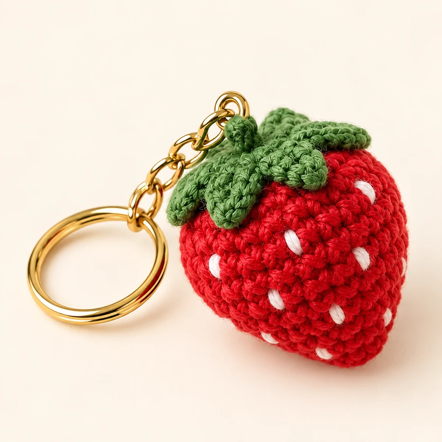
A bright tactile fruit charm for summer drops, gift counters and playful bag styling.
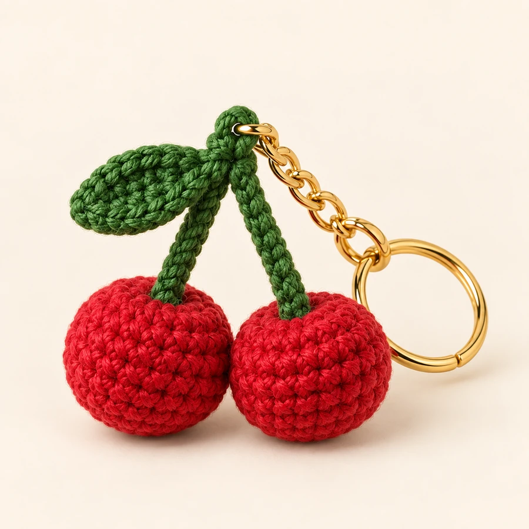
A recognizable twin-fruit silhouette that reads clearly in photos and short-form video.
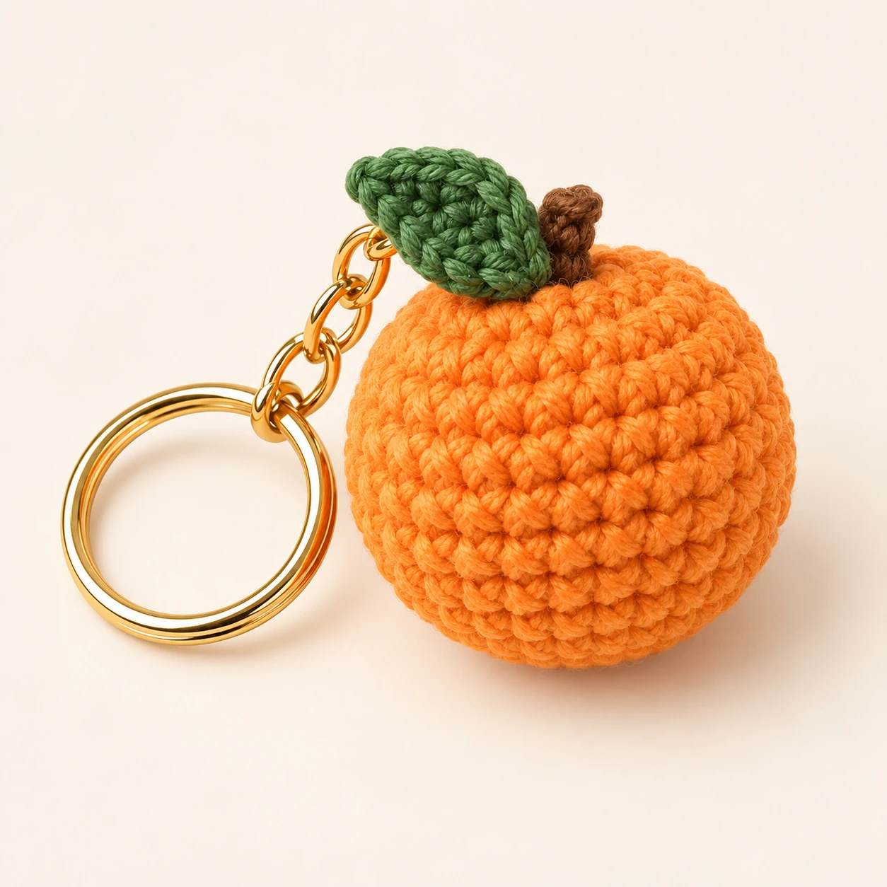
A cheerful citrus design for resort stores, summer capsules and colorful gift assortments.
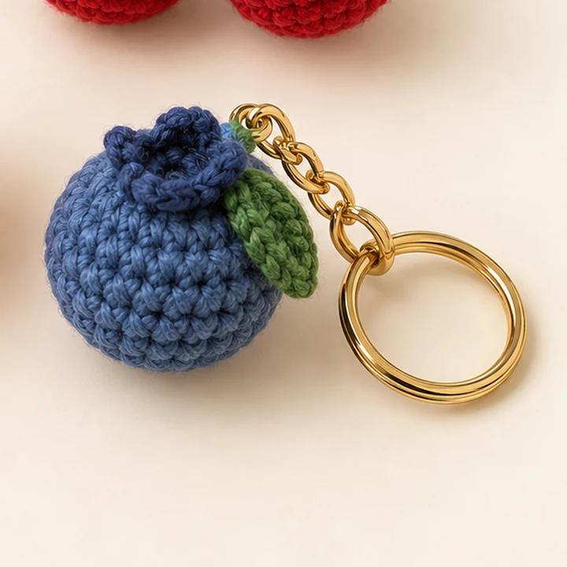
A compact berry motif suited to collectible fruit sets and small impulse-price programs.
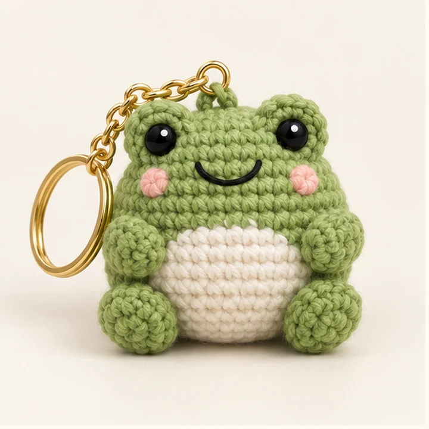
A friendly rounded animal with a strong close-up silhouette for creator-led selling.
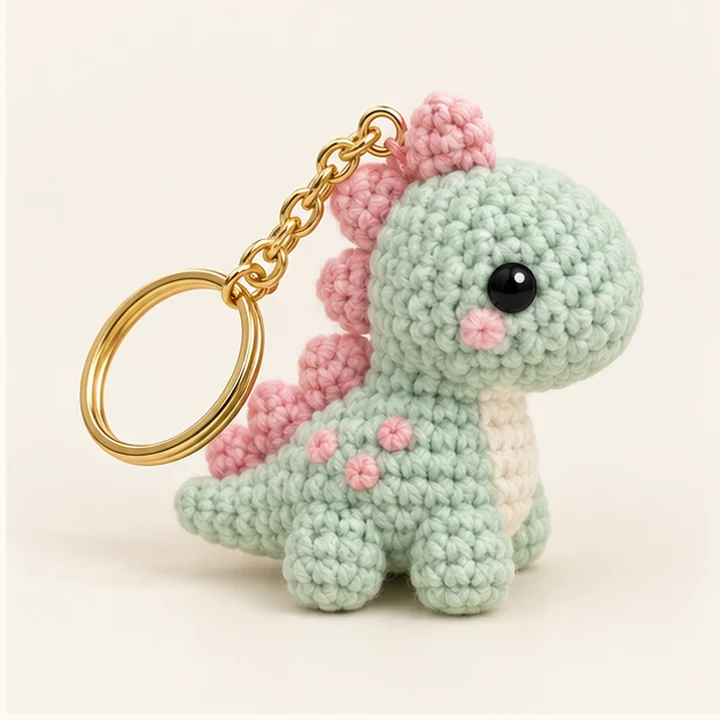
Soft color blocking and a compact dinosaur form for youth gifts and collectible drops.
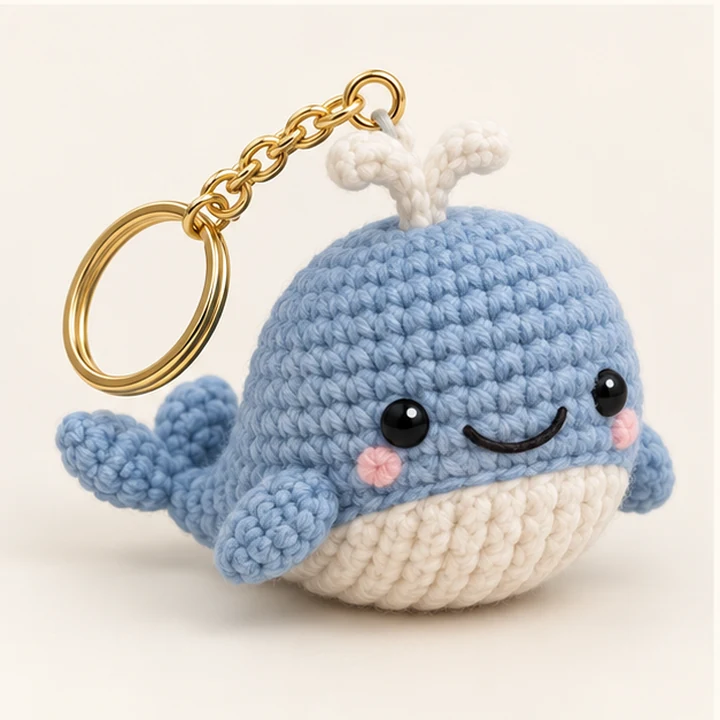
A rounded ocean character for aquariums, coastal shops and family gift ranges.
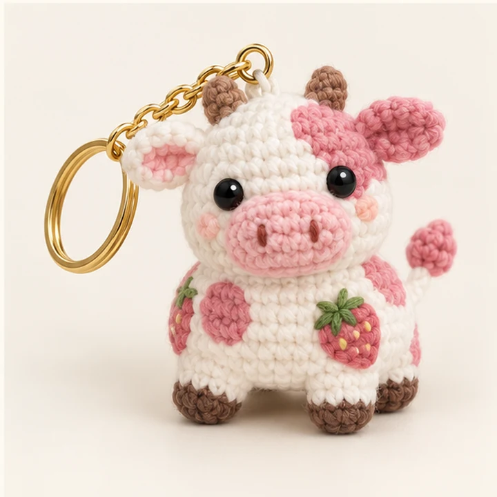
A playful animal-and-fruit crossover for novelty shops and expressive accessories.
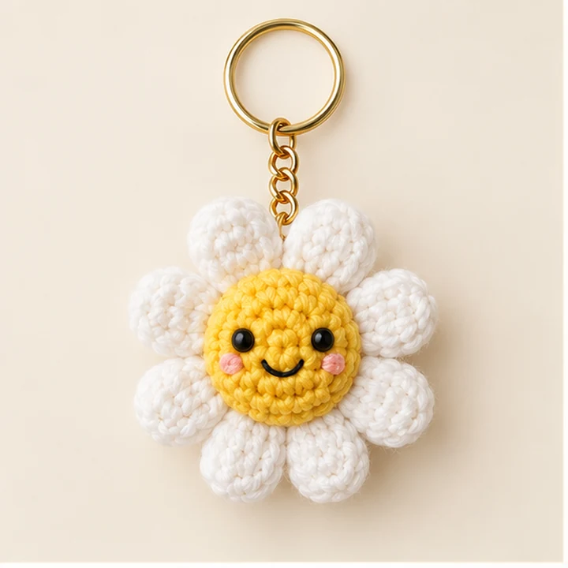
An upbeat flower charm suited to spring launches, friendship gifts and colorful displays.
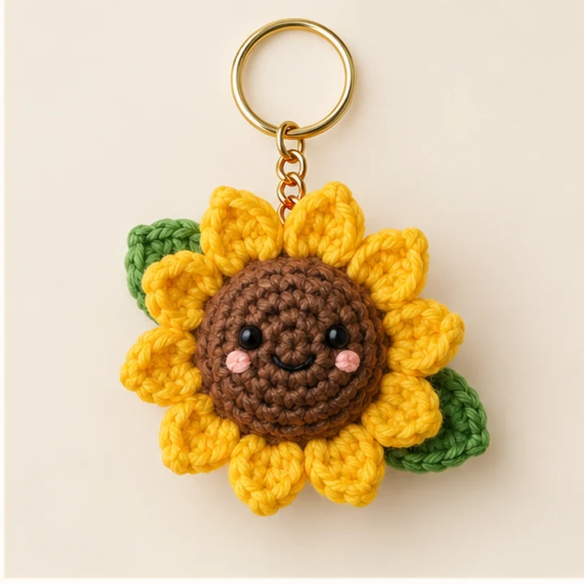
A dimensional botanical motif for florists, gift shops and warm seasonal color stories.
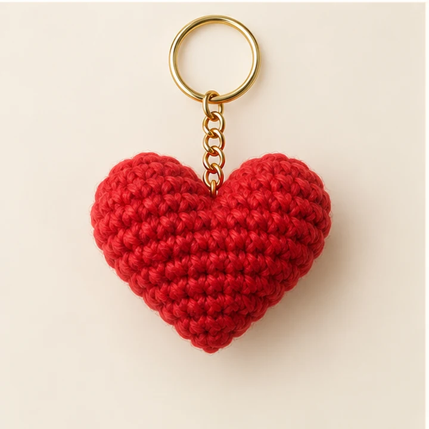
A simple year-round symbol for friendship, event favors and message-card gifting.
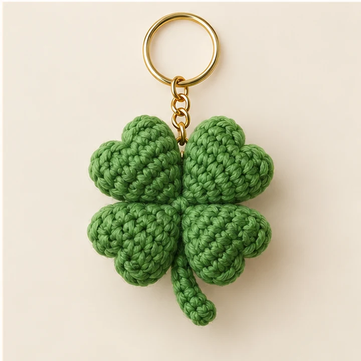
A clean four-leaf design for graduation, good-luck gifting and travel retail.
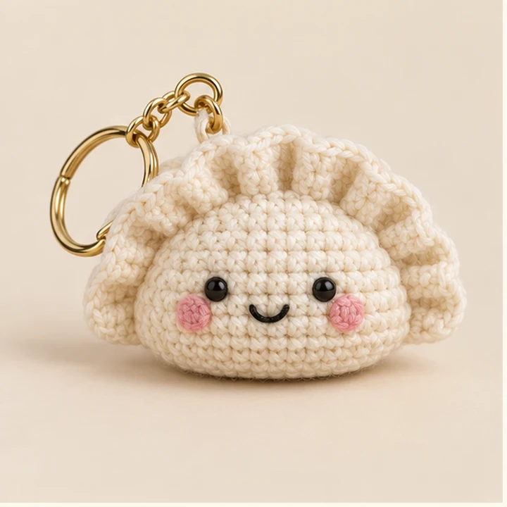
A small food character for restaurant merchandise, cultural gifts and playful add-ons.
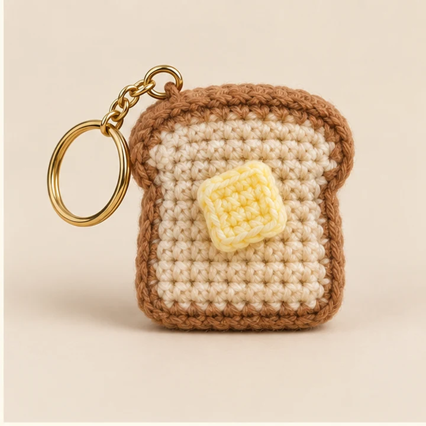
A cozy café-inspired motif for bookstores, coffee shops and novelty gift assortments.
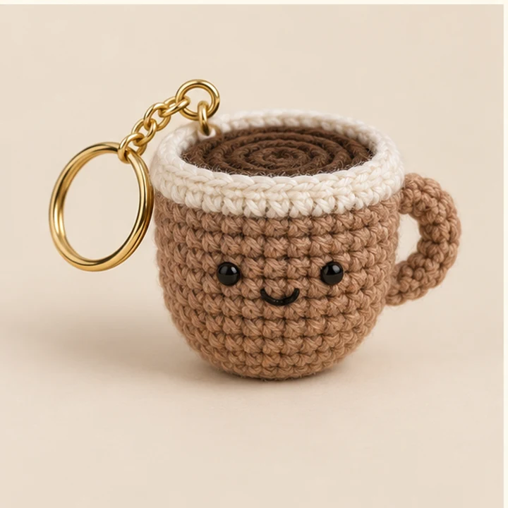
A recognizable everyday icon for café merchandise, office gifts and creator bundles.
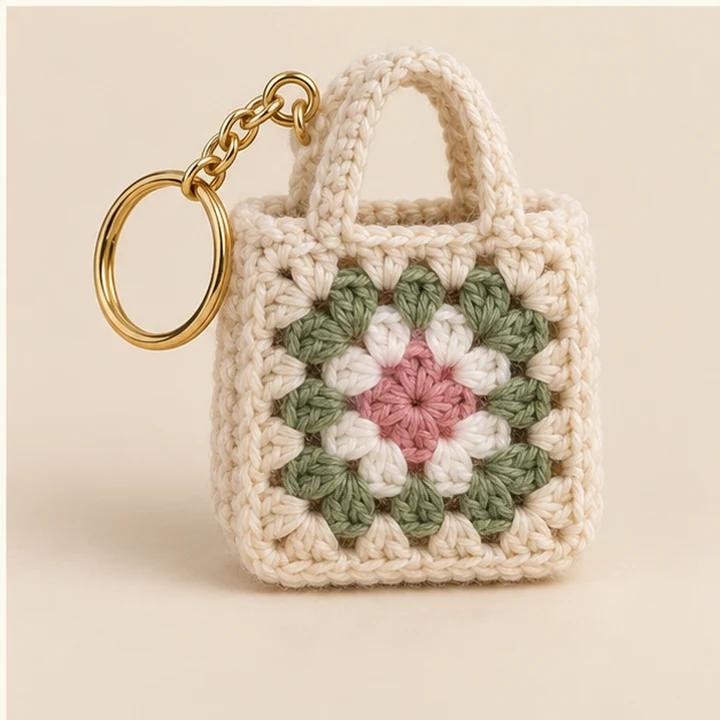
A functional micro bag charm for earbuds, coins or tiny keepsakes with boutique appeal.
Commercial planning
Confirm the motif, attachment, display format and content plan together so the product works both on shelf and on screen.
| Target customer | Gift, fashion, youth, travel or social-commerce buyer |
| Design direction | Preferred motif, size and color story |
| Quantity | Units per style and color split |
| Packaging | Card, barcode, bag or display requirement |
| Delivery | Launch date and destination market |
Buyer FAQ
The standard MOQ is 200 pieces per style. Share the desired color split so feasibility can be reviewed during sampling.
Yes. Split rings, lobster clasps, swivel clips and cord loops can be matched to the intended retail use.
No product is guaranteed to sell. These are market-relevant design directions; final selection should match your customer, price band and launch channel.
Standard bulk production is typically 15–30 days after sample approval and order confirmation.